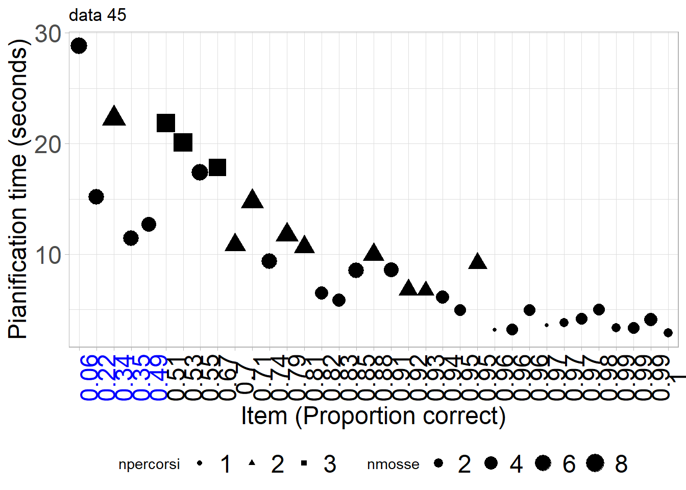
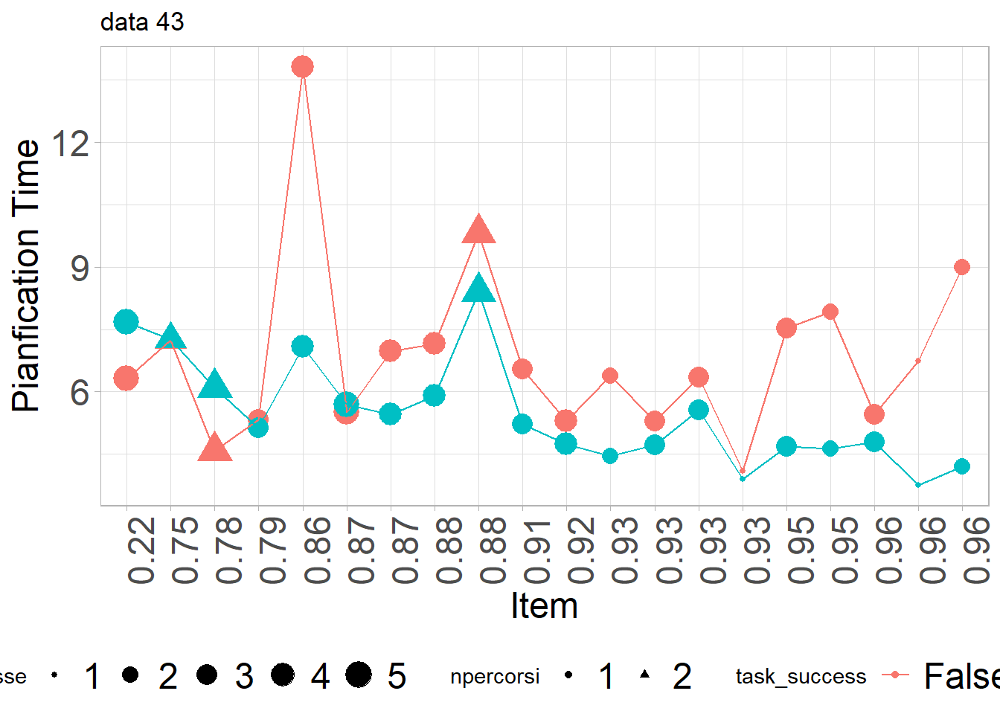
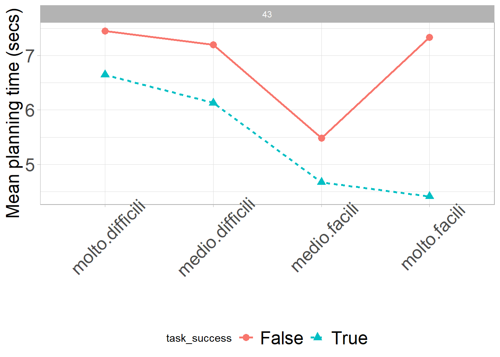
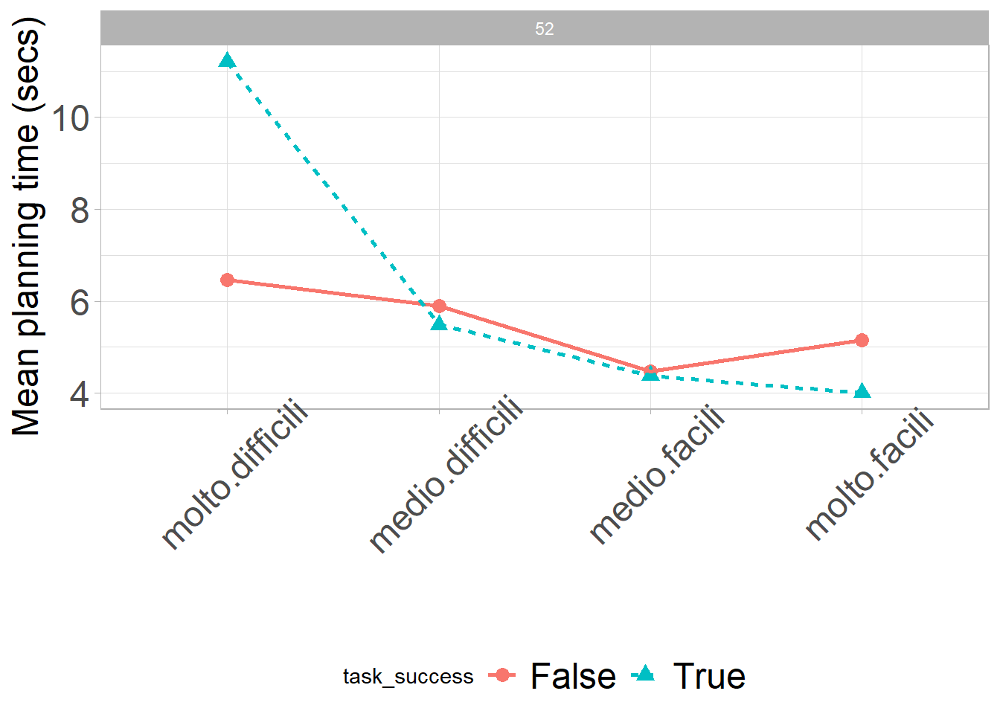
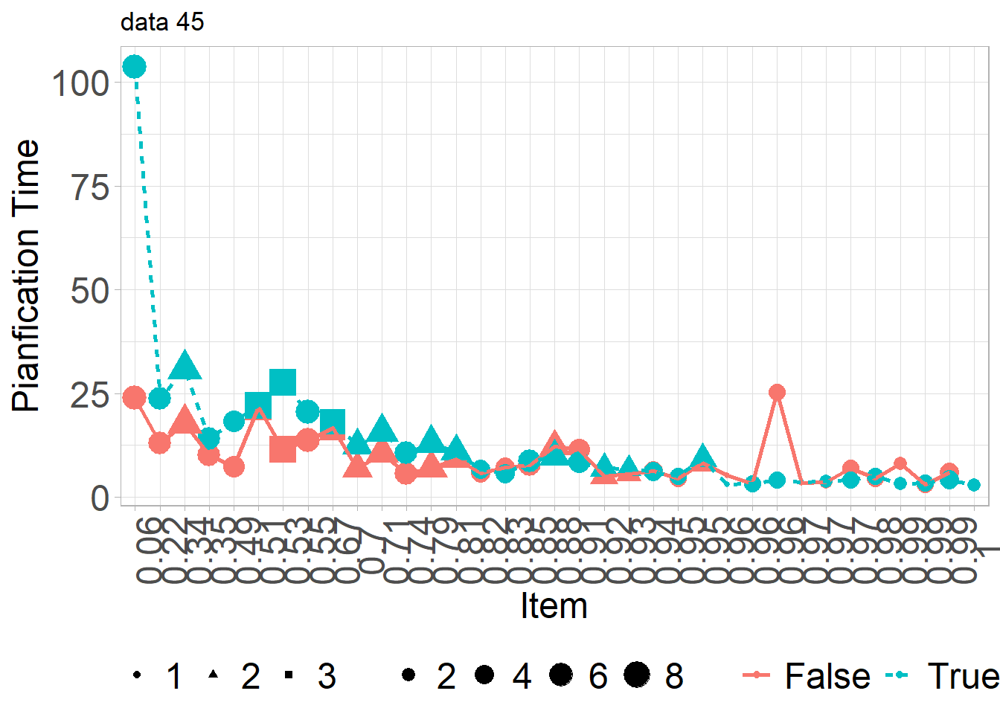

| code | gender | n | n.tot | prop |
|---|---|---|---|---|
| 43 | F | 138 | 294 | 0.47 |
| 43 | M | 156 | 294 | 0.53 |
| 45 | D | 1 | 93 | 0.01 |
| 45 | F | 44 | 93 | 0.47 |
| 45 | M | 48 | 93 | 0.52 |
| 52 | F | 128 | 278 | 0.46 |
| 52 | M | 150 | 278 | 0.54 |
ToL Pianificazione
Riunione PRIN
Nota iniziale
Data 43: Bambini 4-8 anni
Data 45: Bambini e adulti 14+
Data 52: Bambini 9-13
Item pianfication and correct responses
43
52

45

Pianification, correct vs. error response
43

45

52

Numero di mosse
43
45
52
